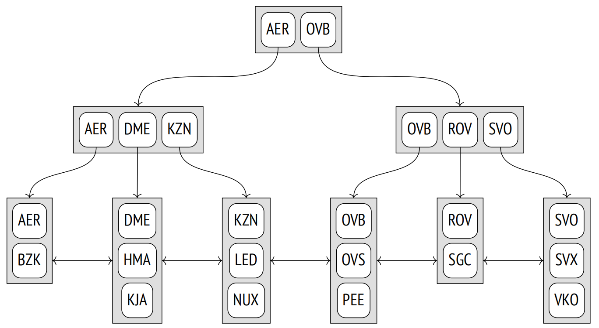
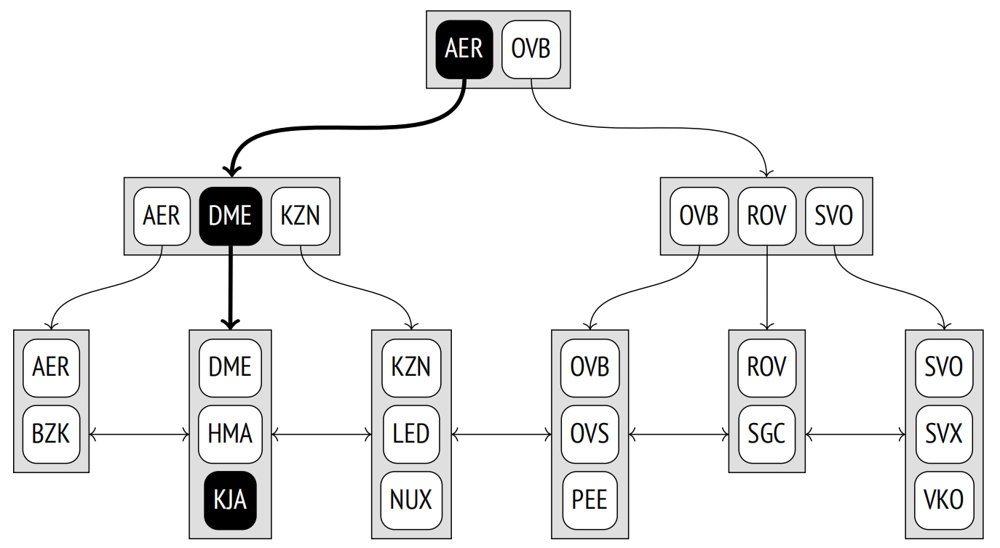
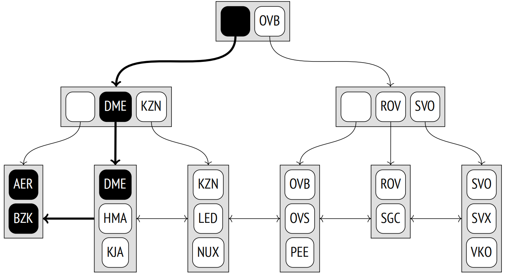
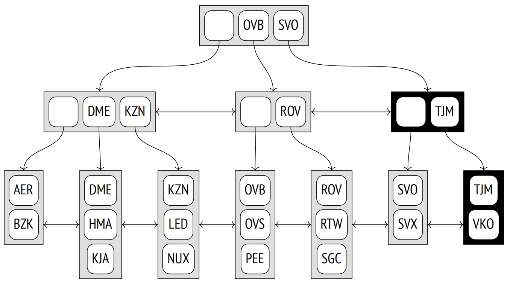
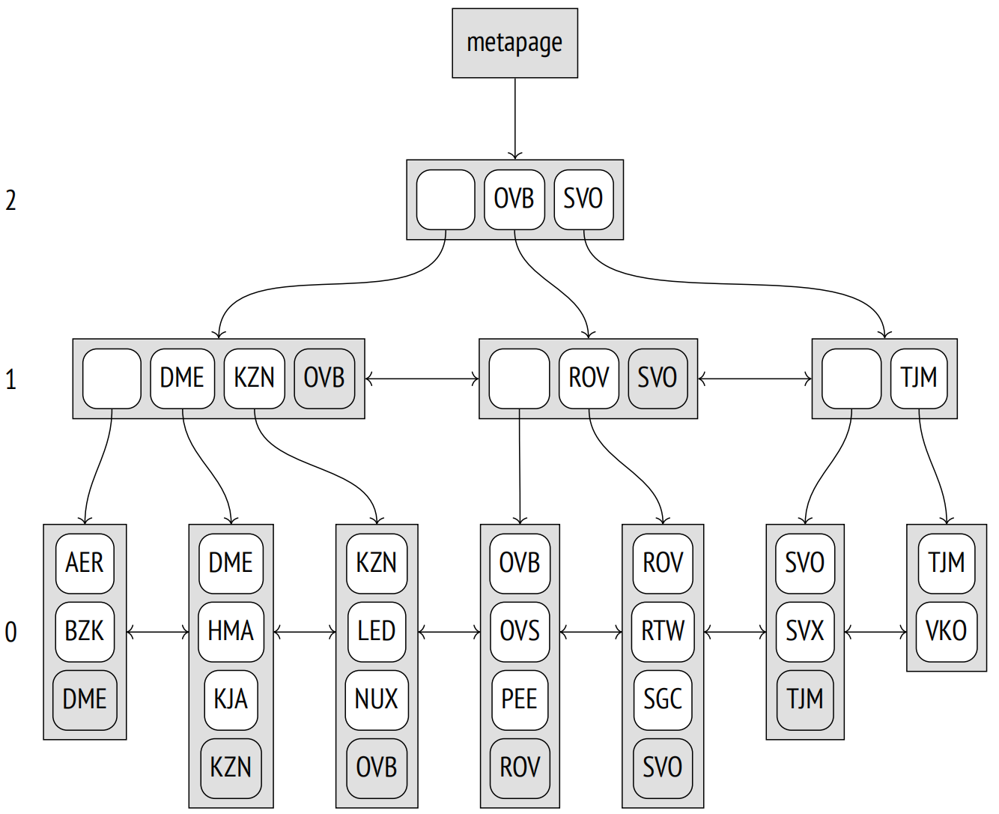

第 25 章：B-tree
25.1 总览
B 树 (作为 btree 访问方法实现) 是一种数据结构，允许你从树的根节点开始向下搜索，在树的叶节点中快速找到所需元素。1 为了明确识别搜索路径，所有树元素必须是有序的。B 树专为可以比较和排序的数据类型 (ordinal) 而设计。
下面是一个索引示意图，此索引基于机场代码构建，内部节点显示为水平矩形；叶节点垂直对齐。
每个树节点包含若干元素，这些元素由一个索引键和一个指针组成。内部节点元素引用下一级节点；叶节点元素引用堆元组 (图中未显示这些引用)。
B 树具有以下重要属性：
-
它们是平衡的，这意味着树的所有叶节点都位于同一深度。因此，这保证了所有值的搜索时间相等。
-
它们的分支很多，也就是说，每个节点包含许多元素，通常有数百个 (插图为了清晰起见仅显示了三个元素的节点)。因此，即使对于非常大的表，B 树的深度也总是很小。
我们不能绝对地说，这种结构名称中的字母 B 代表什么。平衡 (balanced) 和茂密 (bushy) 都同样适用。令人惊讶的是，你经常可以看到它被解释为二进制 (binary)，这显然是不正确的。
-
索引中的数据要么按升序要么按降序排序，这种排序不仅适用于每个节点内部，也适用于同一层级的所有节点。同层节点被绑定成一个双向列表，因此通过简单地扫描列表的一个方向或另一个方向，就有可能得到一个有序的数据集，而不必每次都从根开始。
25.2 检索和插入
25.2.1 等值检索
让我们看看如何通过 “indexed-column = expression” 的条件在树中搜索值。2 我们尝试找到 KJA 机场 (Krasnoyarsk)。
搜索从根节点开始，访问方法必须确定要下降到哪个子节点。它选择了满足 $K_{i}$ ⩽ expression < $K_{i+1}$ 的 $K_{i}$ 键。
根节点包含键 AER 和 OVB。条件 AER ⩽ KJA < OVB 成立，所以我们需要下降到带有 AER 键的元素所引用的子节点。
递归重复此过程，直到我们到达包含所需元组 ID 的叶节点。在此特例下，子节点满足条件 DME ⩽ KJA < KZN，所以我们必须下降到含有 DME 键的元素所引用的叶节点。
你可能已注意到，树的内部节点中最左边的键是冗余的：要选择根的子节点，满足条件 KJA < OVB 就足够了。B 树不存储这样的键，因此在接下来的图中，我会将相应的元素留空。
叶节点中所需元素可以通过二分搜索快速找到。
然而，搜索过程并不像看起来那么简单。必须要考虑到索引中数据的排序顺序可以是升序 (如上所示)，也可以是降序。即使是唯一索引，也可能有多个匹配的值，所有这些值都必须返回。此外，可能有太多的重复项以至于它们不适合单个节点，因此还必须处理相邻的叶节点。
由于索引可以包含非唯一值，因此将其顺序称为非降序而不是升序 (以及非升序而不是降序) 会更准确。但我将坚持使用更简单的术语。此外，元组 ID 是索引键的一部分，这让我们可以认为索引条目是唯一的，即使值实际上是相同的。
最重要的是，在搜索过程中，其他进程可能会修改数据，页面可能会分裂为两个，树的结构可能会发生变化。所有算法都旨在尽可能减少这些并发操作之间的冲突，并避免过多的锁定，但我们不打算在这里讨论这些技术细节。
25.2.2 非等值检索
如果按照 “indexed-column ⩽ expression” (或 “indexed-column ⩾ expression”) 进行搜索，首先要在索引中查找满足相等条件的值，然后沿着需要的方向遍历其叶节点，直到到达树的末端。
下图说明了搜索机场代码小于或等于 DME (Domodedovo) 的过程。
对于小于和大于操作符，过程是相同的，除了需要排除第一个找到的值。
25.2.3 范围检索
当通过范围 “expression1 ⩽ indexed-column ⩽ expression2” 进行检索时，我们必须先找到 expression1，然后向右遍历叶节点，直至找到 expression2。下图说明了在 LED (Saint Petersburg) 和 ROV (Rostov-on-Don) 之间搜索机场代码的过程，包括两端。

25.2.4 插入
新元素的插入位置由键的顺序明确定义。例如，如果将 RTW 机场代码 (Saratov) 插入到表中，新元素将出现在倒数第二个叶节点中，位于 ROV 和 SGC 之间。
但如果叶节点没有足够的空间容纳新元素怎么办？例如 (假设一个节点最多可以容纳三个元素)，如果我们插入 TJM 机场代码 (Tyumen)，最后一个叶节点将溢出。在这种情况下，节点被分裂成两个，旧节点的一些元素被移动到新节点中，并在父节点中添加一个指向新子节点的指针。显然，父节点也可能溢出。然后它也分裂成两个节点，依次类推。如果涉及到根节点的分裂，则在目标节点之上再创建一个节点，成为树的新的根节点。在这种情况下，树的深度增加了一层。
在此例中，插入 TJM 机场会导致两个节点分裂；由此产生的新节点在下图中高亮显示。为了确保任何节点都可以分裂，一个双向列表绑定了所有层级的节点，而不仅仅是最低层级的节点。
所描述的插入和分裂过程确保了树保持平衡，并且由于一个节点可以容纳的元素数量通常非常大，因此树的深度很少增加。
问题是，一旦分裂，节点就永远不能合并在一起，即使在清理之后只包含很少的元素。这个限制不是 B 树数据结构本身的问题，而是其在 PostgreSQL 实现中的问题。因此，如果在尝试插入时节点满了，访问方法首先会尝试剪枝多余的数据以清理一些空间，避免额外的分裂。
25.3 页面布局
B 树的每个节点占用一个页面。页面的大小定义了节点的容量。
由于页面分裂，树根在不同时间可以由不同的页面表示。但是搜索算法必须始终从根节点开始扫描。它在零索引页面 (称为元页面) 中找到当前根页面的 ID。元页面还包含一些其他元数据。
索引页中的数据布局与我们迄今为止看到的有些不同。每一层除了最右边的页面外，所有页面都包含一个额外的"高键"，这个高键保证不小于此页面中的任何键。在上图中，高键被高亮显示。
让我们使用 pageinspect 扩展来查看基于六位数预订参考号的实际索引页面。元页面列出了根页面 ID 和树的深度 (层级编号从叶节点开始，从零开始)：
=> SELECT root, level
FROM bt_metap('bookings_pkey');
root | level
−−−−−−+−−−−−−−
290 | 2
(1 row)存储在索引条目中的键以字节序显式，这不是很方便：
=> SELECT data
FROM bt_page_items('bookings_pkey',290)
WHERE itemoffset = 2;
data
−−−−−−−−−−−−−−−−−−−−−−−−−
0f 30 43 39 41 42 31 00
(1 row)为了解读这些值，我们将不得不编写一个特定功能的函数。这个函数可能不支持所有平台，并且在某些特定情况下可能无法工作，但对于本章中的示例来说，它将足够使用：
=> CREATE FUNCTION data_to_text(data text)
RETURNS text
AS $$
DECLARE
raw bytea := ('\x'||replace(data,' ',''))::bytea;
pos integer := 0;
len integer;
res text := '';
BEGIN
WHILE (octet_length(raw) > pos)
LOOP
len := (get_byte(raw,pos) - 3) / 2;
EXIT WHEN len <= 0;
IF pos > 0 THEN
res := res || ', ';
END IF;
res := res || (
SELECT string_agg( chr(get_byte(raw, i)),'')
FROM generate_series(pos+1,pos+len) i
);
pos := pos + len + 1;
END LOOP;
RETURN res;
END;
$$ LANGUAGE plpgsql;现在让我们看一下根页面的内容：
=> SELECT itemoffset, ctid, data_to_text(data)
FROM bt_page_items('bookings_pkey',290);
itemoffset | ctid | data_to_text
−−−−−−−−−−−−+−−−−−−−−−−+−−−−−−−−−−−−−−
1 | (3,0) |
2 | (289,1) | 0C9AB1
3 | (575,1) | 192F03
4 | (860,1) | 25D715
5 | (1145,1) | 32785C
...
17 | (4565,1) | C993F6
18 | (4850,1) | D63931
19 | (5135,1) | E2CB14
20 | (5420,1) | EF6FEA
21 | (5705,1) | FC147D
(21 rows)正如我所说，第一个条目不包含键值。ctid 列提供了指向子页面的链接。
假设我们正在查找预订号 E2D725。在这种情况下，我们必须选择条目 19 (因为 E2CB14 ⩽ E2D725 < EF6FEA) 并下降到页面 5135。
=> SELECT itemoffset, ctid, data_to_text(data)
FROM bt_page_items('bookings_pkey',5135);
itemoffset | ctid | data_to_text
−−−−−−−−−−−−+−−−−−−−−−−+−−−−−−−−−−−−−−
1 | (5417,1) | EF6FEA ← high key
2 | (5132,0) |
3 | (5133,1) | E2D71D
4 | (5134,1) | E2E2F4
5 | (5136,1) | E2EDE7
...
282 | (5413,1) | EF41BE
283 | (5414,1) | EF4D69
284 | (5415,1) | EF58D4
285 | (5416,1) | EF6410
(285 rows)此页面中的第一个条目包含高键，这似乎有点出乎意料。从逻辑上讲，它应该放在页面的末尾，但从实现的角度来看，将其放在开头更为方便，这样每次页面内容改变时就无需移动它。
此处我们选择条目 3 (因为 E2D71D ⩽ E2D725 < E2E2F4) 并下降到页面 11919。
=> SELECT itemoffset, ctid, data_to_text(data)
FROM bt_page_items('bookings_pkey',5133);
itemoffset | ctid | data_to_text
−−−−−−−−−−−−+−−−−−−−−−−−−−+−−−−−−−−−−−−−−
1 | (11921,1) | E2E2F4
2 | (11919,76) | E2D71D
3 | (11919,77) | E2D725
4 | (11919,78) | E2D72D
5 | (11919,79) | E2D733
...
363 | (11921,123) | E2E2C9
364 | (11921,124) | E2E2DB
365 | (11921,125) | E2E2DF
366 | (11921,126) | E2E2E5
367 | (11921,127) | E2E2ED
(367 rows)这是索引的叶子页面。第一个条目是高键；所有其他条目都指向堆元组。
在这里找到了我们的预订信息：
=> SELECT * FROM bookings
WHERE ctid = '(11919,77)';
book_ref | book_date | total_amount
−−−−−−−−−−+−−−−−−−−−−−−−−−−−−−−−−−−+−−−−−−−−−−−−−−
E2D725 | 2017−01−25 04:10:00+03 | 28000.00
(1 row)这大致就是当我们通过预订号搜索预订时，在底层发生的事情：
=> EXPLAIN (costs off)
SELECT * FROM bookings
WHERE book_ref = 'E2D725';
QUERY PLAN
−−−−−−−−−−−−−−−−−−−−−−−−−−−−−−−−−−−−−−−−−−−−−
Index Scan using bookings_pkey on bookings
Index Cond: (book_ref = 'E2D725'::bpchar)
(2 rows)25.3.1 去重
非唯一索引可以包含许多指向不同堆元组的重复键。由于非唯一键出现不止一次，并因此占用大量空间，所以重复键被折叠收敛成一个单独的索引条目，其中包含键和相应元组 ID 的列表。3 在某些情况下，这个过程 (称为去重) 可以显著减小索引的大小。
但是，由于 MVCC 的原因，即使是唯一索引也可能包含重复项：因为索引保留对表行所有版本的引用。HOT 更新机制可以减少因为引用过时且通常是短暂的行版本而导致的索引膨胀，但有时这可能不适用。在这种情况下，去重可以花费一些时间来清理冗余堆元组并避免额外的页面分裂。
为了避免在去重不会带来立竿见影的效果时浪费资源，仅当叶子页面没有足够空间容纳更多元组时才会执行这种折叠。4 然后，页面剪枝和去重 5 可以释放一些空间并防止不必要的页面分裂。但是，如果重复项很少，你可以通过关闭 deduplicate_items 存储参数来禁用去重功能。
一些索引不支持去重。主要限制是键的等价性必须通过它们内部表示的简单二进制比较来检查。到目前为止，并非所有数据类型都可以通过这种方式进行比较。例如，浮点数 (float 和 double precision) 有两种不同的零值表示形式。任意精度的数字 (numeric) 可以以不同标度表示同一个数字，而 jsonb 类型可以使用这样的数字。如果使用非确定性的排序规则，6 text 类型也无法进行去重，因为这允许由不同的字节序表示同一个符号 (标准排序规则是确定性的)。
另外，复合类型、range 类型和数组以及使用 INCUDE 子句声明的索引目前均不支持去重。
要检查特定索引是否可以使用去重，你可以查看其元页面中的 allequalimage 字段：
=> CREATE INDEX ON tickets(book_ref);
=> SELECT allequalimage FROM bt_metap('tickets_book_ref_idx');
allequalimage
−−−−−−−−−−−−−−−
t
(1 row)此例中支持去重。实际上，我们可以看到其中一个叶子页面既包含带有单个元组 ID (htid) 的索引条目，也包含带有 ID 列表 (tids) 的索引条目：
=> SELECT itemoffset, htid, left(tids::text,27) tids,
data_to_text(data) AS data
FROM bt_page_items('tickets_book_ref_idx',1)
WHERE itemoffset > 1;
itemoffset | htid | tids | data
−−−−−−−−−−−−+−−−−−−−−−−−−+−−−−−−−−−−−−−−−−−−−−−−−−−−−−−+−−−−−−−−
2 | (32965,40) | | 000004
3 | (47429,51) | | 00000F
4 | (3648,56) | {"(3648,56)","(3648,57)"} | 000010
5 | (6498,47) | | 000012
...
271 | (21492,46) | | 000890
272 | (26601,57) | {"(26601,57)","(26601,58)"} | 0008AC
273 | (25669,37) | | 0008B6
(272 rows)25.3.2 内部索引条目的紧凑存储
去重使得索引的叶子页面能够容纳更多的条目。但是，尽管叶子页面构成了索引的大部分，但在内部页面上执行的数据压缩以防止额外的分裂同样重要，因为搜索效率直接依赖于树的深度。
内部索引条目包含索引键，但它们的值仅用于在搜索过程中确定要下降到的子树。在多列索引中，通常只需取第一个键属性 (或几个首属性)。为了在页面中节省空间，可以截断其他属性。
当叶子页面被分裂且内部页面需要容纳一个新指针时，便会发生这种 suffix truncation (后缀截断)。7
理论上，我们甚至可以更进一步，只保留属性中有意义的部分，例如，一行的前几个符号，这足以区分子树。但这还没有实现：索引条目要么包含整个属性，要么完全不包含这个属性。
例如，以下是索引根页面的几个条目，索引基于 tickets 表的 book_ref 和 passenger_name 列创建。
=> CREATE INDEX tickets_bref_name_idx
ON tickets(book_ref, passenger_name);
=> SELECT itemoffset, ctid, data_to_text(data)
FROM bt_page_items('tickets_bref_name_idx',229)
WHERE itemoffset BETWEEN 8 AND 13;
itemoffset | ctid | data_to_text
−−−−−−−−−−−−+−−−−−−−−−−+−−−−−−−−−−−−−−−−−−−−−−−−−−−−
8 | (1607,1) | 1A98A0
9 | (1833,2) | 1E57D1, SVETLANA MAKSIMOVA
10 | (2054,1) | 220797
11 | (2282,1) | 25DB06
12 | (2509,2) | 299FE4, YURIY AFANASEV
13 | (2736,1) | 2D62C9
(6 rows)我们可以看到有些索引条目没有第二个属性。
自然地，叶子页面必须保留所有键属性和 INCLUDE 列值 (如果有的话)。否则，将无法执行仅索引扫描。唯一的例外是高键；它们可以部分保留。
25.4 操作符类
25.4.1 比较语义
除了哈希值之外，系统还必须知道如何对各种类型的值进行排序，包括自定义类型。这对于排序、分组、归并连接和一些其他操作是必不可少的。就像哈希一样，特定数据类型的比较操作符是由操作符类定义的。8
操作符类允许我们从名称 (如 >, <, =) 中抽象出来，甚至可以提供多种方式来对同一类型的值进行排序。
以下是任何 btree 方法的操作符类必须定义的强制性比较操作符 (显式为 bool_ops 族)：
=> SELECT amopopr::regoperator AS opfamily_operator,
amopstrategy
FROM pg_am am
JOIN pg_opfamily opf ON opfmethod = am.oid
JOIN pg_amop amop ON amopfamily = opf.oid
WHERE amname = 'btree'
AND opfname = 'bool_ops'
ORDER BY amopstrategy;
opfamily_operator | amopstrategy
−−−−−−−−−−−−−−−−−−−−−+−−−−−−−−−−−−−−
<(boolean,boolean) | 1
<=(boolean,boolean) | 2
=(boolean,boolean) | 3
>=(boolean,boolean) | 4
>(boolean,boolean) | 5
(5 rows)这五个比较操作符中的每一个都对应于一种策略，9 策略定义了它们的语义：
-
小于
-
小于或等于
-
等于
-
大于或等于
-
大于
B 树操作符类还包括几个支持函数。10 第一个函数必须在第一个参数大于第二个参数时返回 1，如果它小于第二个参数，则返回 -1，如果参数相等，则返回 0。
其他支持函数是可选的，但它们可以提升访问方法的性能。
为了更好地理解这种机制，我们可以定义一个带有非默认排序规则的新数据类型。文档给出了复数的示例，11 但它是用 C 语言编写的。幸运的是，B 树操作符类也可以使用解释型语言来实现，因此我将利用这一点，尽可能简单地制作一个示例 (即使明知效率低下)。
接下来，让我们定义一个用于信息单位的新复合类型：
=> CREATE TYPE capacity_units AS ENUM (
'B', 'kB', 'MB', 'GB', 'TB', 'PB'
);
=> CREATE TYPE capacity AS (
amount integer,
unit capacity_units
);现在创建一个包含新类型列的表，并用随机值填充：
=> CREATE TABLE test AS
SELECT ( (random()*1023)::integer, u.unit )::capacity AS cap
FROM generate_series(1,100),
unnest(enum_range(NULL::capacity_units)) AS u(unit);默认情况下，复合类型的值按字典顺序排序，这与本示例中的自然顺序不同。
=> SELECT * FROM test ORDER BY cap;
cap
−−−−−−−−−−−
(1,B)
(3,GB)
(4,MB)
(9,kB)
...
(1017,kB)
(1017,GB)
(1018,PB)
(1020,MB)
(600 rows)现在让我们开始创建操作符类。我们将从定义一个将容量转换为字节的函数开始：
=> CREATE FUNCTION capacity_to_bytes(a capacity) RETURNS numeric
AS $$
SELECT a.amount::numeric *
1024::numeric ^ ( array_position(enum_range(a.unit), a.unit) - 1 );
$$ LANGUAGE sql STRICT IMMUTABLE;
=> SELECT capacity_to_bytes('(1,kB)'::capacity);
capacity_to_bytes
−−−−−−−−−−−−−−−−−−−−−−−
1024.0000000000000000
(1 row)为将来的操作符类创建一个支持函数：
=> CREATE FUNCTION capacity_cmp(a capacity, b capacity)
RETURNS integer
AS $$
SELECT sign(capacity_to_bytes(a) - capacity_to_bytes(b));
$$ LANGUAGE sql STRICT IMMUTABLE;现在，使用这个支持函数定义比较操作符就变得简单了。我故意使用了奇特的名称来展示这些名称可以是任意的：
=> CREATE FUNCTION capacity_lt(a capacity, b capacity) RETURNS boolean
AS $$
BEGIN
RETURN capacity_cmp(a,b) < 0;
END;
$$ LANGUAGE plpgsql IMMUTABLE STRICT;
=> CREATE OPERATOR #<# (
LEFTARG = capacity,
RIGHTARG = capacity,
FUNCTION = capacity_lt
);其他四个操作符以类似方式进行定义。
=> CREATE FUNCTION capacity_le(a capacity, b capacity) RETURNS boolean
AS $$
BEGIN
RETURN capacity_cmp(a,b) <= 0;
END;
$$ LANGUAGE plpgsql IMMUTABLE STRICT;
=> CREATE OPERATOR #<=# (
LEFTARG = capacity,
RIGHTARG = capacity,
FUNCTION = capacity_le
);
=> CREATE FUNCTION capacity_eq(a capacity, b capacity) RETURNS boolean
AS $$
BEGIN
RETURN capacity_cmp(a,b) = 0;
END;
$$ LANGUAGE plpgsql IMMUTABLE STRICT;
=> CREATE OPERATOR #=# (
LEFTARG = capacity,
RIGHTARG = capacity,
FUNCTION = capacity_eq,
MERGES -- can be used in merge joins
);
=> CREATE FUNCTION capacity_ge(a capacity, b capacity) RETURNS boolean
AS $$
BEGIN
RETURN capacity_cmp(a,b) >= 0;
END;
$$ LANGUAGE plpgsql IMMUTABLE STRICT;
=> CREATE OPERATOR #>=# (
LEFTARG = capacity,
RIGHTARG = capacity,
FUNCTION = capacity_ge
);
=> CREATE FUNCTION capacity_gt(a capacity, b capacity) RETURNS boolean
AS $$
BEGIN
RETURN capacity_cmp(a,b) > 0;
END;
$$ LANGUAGE plpgsql IMMUTABLE STRICT;
=> CREATE OPERATOR #># (
LEFTARG = capacity,
RIGHTARG = capacity,
FUNCTION = capacity_gt
);在这个阶段，我们已经可以比较容量了：
=> SELECT (1,'MB')::capacity #># (512, 'kB')::capacity;
?column?
−−−−−−−−−−
t
(1 row)一旦操作符类创建好之后，排序也将按预期工作。
=> CREATE OPERATOR CLASS capacity_ops
DEFAULT FOR TYPE capacity -- to be used by default
USING btree AS
OPERATOR 1 #<#,
OPERATOR 2 #<=#,
OPERATOR 3 #=#,
OPERATOR 4 #>=#,
OPERATOR 5 #>#,
FUNCTION 1 capacity_cmp(capacity,capacity);
=> SELECT * FROM test ORDER BY cap;
cap
−−−−−−−−−−−
(1,B)
(21,B)
(27,B)
(35,B)
(46,B)
...
(1002,PB)
(1013,PB)
(1014,PB)
(1014,PB)
(1018,PB)
(600 rows)创建新索引时默认使用我们的操作符类，该索引以正确的顺序返回结果：
=> CREATE INDEX ON test(cap);
=> SELECT * FROM test WHERE cap #<# (100,'B')::capacity ORDER BY cap;
cap
−−−−−−−−
(1,B)
(21,B)
(27,B)
(35,B)
(46,B)
(57,B)
(68,B)
(70,B)
(72,B)
(76,B)
(78,B)
(94,B)
(12 rows)
=> EXPLAIN (costs off) SELECT *
FROM test WHERE cap #<# (100,'B')::capacity ORDER BY cap;
QUERY PLAN
−−−−−−−−−−−−−−−−−−−−−−−−−−−−−−−−−−−−−−−−−−−−−
Index Only Scan using test_cap_idx on test
Index Cond: (cap #<# '(100,B)'::capacity)
(2 rows)等值操作符声明中指定的 MERGE 子句使得这个数据类型支持归并连接。
25.4.2 多列索引和排序
让我们仔细看一下多列索引的排序。
首先，在声明索引时选择列的最佳顺序非常重要：页面内的数据排序将从第一列开始，然后第二列，依此类推。只有当提供的过滤条件涵盖从第一列开始的连续的列时，多列索引才能保证高效的搜索：第一列、前两列、第一列至第三列之间的范围等。其他类型的条件只能用来过滤掉基于其他标准获取的冗余值。
以下是在 tickets 表上创建的索引，其第一页中索引条目的顺序，此索引包括预订参考号和乘客姓名：
=> SELECT itemoffset, data_to_text(data)
FROM bt_page_items('tickets_bref_name_idx',1)
WHERE itemoffset > 1;
itemoffset | data_to_text
−−−−−−−−−−−−+−−−−−−−−−−−−−−−−−−−−−−−−−−−−−
2 | 000004, PETR MAKAROV
3 | 00000F, ANNA ANTONOVA
4 | 000010, ALEKSANDR SOKOLOV
5 | 000010, LYUDMILA BOGDANOVA
6 | 000012, TAMARA ZAYCEVA
7 | 000026, IRINA PETROVA
8 | 00002D, ALEKSANDR SMIRNOV
...
187 | 0003EF, VLADIMIR CHERNOV
188 | 00040C, ANTONINA KOROLEVA
189 | 00040C, DMITRIY FEDOROV
190 | 00041E, EGOR FEDOROV
191 | 00041E, ILYA STEPANOV
192 | 000447, VIKTOR VASILEV
193 | 00044D, NADEZHDA KULIKOVA
(192 rows)在这种情况下，只有通过预订参考号和乘客姓名，或仅通过预订参考号，才能高效地检索 tickets 表。
=> EXPLAIN (costs off) SELECT *
FROM tickets
WHERE book_ref = '000010';
QUERY PLAN
−−−−−−−−−−−−−−−−−−−−−−−−−−−−−−−−−−−−−−−−−−−−−−−−−−
Index Scan using tickets_book_ref_idx on tickets
Index Cond: (book_ref = '000010'::bpchar)
(2 rows)
=> EXPLAIN (costs off) SELECT *
FROM tickets
WHERE book_ref = '000010' AND passenger_name = 'LYUDMILA BOGDANOVA';
QUERY PLAN
−−−−−−−−−−−−−−−−−−−−−−−−−−−−−−−−−−−−−−−−−−−−−−−−−−−−−−−−−−−−−−−−−−−−−
Index Scan using tickets_bref_name_idx on tickets
Index Cond: ((book_ref = '000010'::bpchar) AND (passenger_name...
(2 rows)但如果我们查找乘客姓名，则必须扫描所有的行：
=> EXPLAIN (costs off) SELECT *
FROM tickets
WHERE passenger_name = 'LYUDMILA BOGDANOVA';
QUERY PLAN
−−−−−−−−−−−−−−−−−−−−−−−−−−−−−−−−−−−−−−−−−−−−−−−−−−−−−−−−−−−−−
Gather
Workers Planned: 2
−> Parallel Seq Scan on tickets
Filter: (passenger_name = 'LYUDMILA BOGDANOVA'::text)
(4 rows)即使规划器选择执行索引扫描，也仍然需要遍历所有索引条目。12 不幸的是，计划并不会显示条件实际上仅用于过滤结果。
如果第一列没有太多不同的值 v1,v2, …, vn，通过以下条件进行一系列搜索而不是使用单一条件 “col2 = value” 的搜索，可能会有益处，这样可以在对应的子树上进行多次遍历：
col1 = v1 and col2 = value
col1 = v2 and col2 = value
⋯
col1 = vn and col2 = value
这种类型的索引访问被称之为 Skip Scan，但目前尚未实现。13
反之亦然，如果根据乘客姓名和预订号创建索引，那么它将更适合仅按乘客姓名，或者按乘客姓名和预订参考号两者进行查询：
=> CREATE INDEX tickets_name_bref_idx
ON tickets(passenger_name, book_ref);
=> SELECT itemoffset, data_to_text(data)
FROM bt_page_items('tickets_name_bref_idx',1)
WHERE itemoffset > 1;
itemoffset | data_to_text
−−−−−−−−−−−−+−−−−−−−−−−−−−−−−−−−−−−−−−−−−−−
2 | ADELINA ABRAMOVA, E37EDB
3 | ADELINA AFANASEVA, 1133B7
4 | ADELINA AFANASEVA, 4F3370
5 | ADELINA AKIMOVA, 7D2881
6 | ADELINA ALEKSANDROVA, 3C3ADD
7 | ADELINA ALEKSANDROVA, 52801E
...
185 | ADELINA LEBEDEVA, 0A00E3
186 | ADELINA LEBEDEVA, DAEADE
187 | ADELINA LEBEDEVA, DFD7E5
188 | ADELINA LOGINOVA, 8022F3
189 | ADELINA LOGINOVA, EE67B9
190 | ADELINA LUKYANOVA, 292786
191 | ADELINA LUKYANOVA, 54D3F9
(190 rows)
=> EXPLAIN (costs off) SELECT * FROM tickets
WHERE passenger_name = 'LYUDMILA BOGDANOVA';
QUERY PLAN
−−−−−−−−−−−−−−−−−−−−−−−−−−−−−−−−−−−−−−−−−−−−−−−−−−−−−−−−−−−−−−−−−
Bitmap Heap Scan on tickets
Recheck Cond: (passenger_name = 'LYUDMILA BOGDANOVA'::text)
−> Bitmap Index Scan on tickets_name_bref_idx
Index Cond: (passenger_name = 'LYUDMILA BOGDANOVA'::text)
(4 rows)除了列顺序之外，在创建新索引时，还应该注意排序顺序。默认情况下，值按升序 (ASC) 排序，但如果需要，可以将其反转为降序 (DESC)。如果索引是在单个列上构建的，这并不重要，因为它可以沿任何方向扫描。但在多列索引中，排序顺序变得很重要。
我们新创建的索引可以用来按升序或降序检索按两列排序的数据：
=> EXPLAIN (costs off) SELECT *
FROM tickets
ORDER BY passenger_name, book_ref;
QUERY PLAN
−−−−−−−−−−−−−−−−−−−−−−−−−−−−−−−−−−−−−−−−−−−−−−−−−−−
Index Scan using tickets_name_bref_idx on tickets
(1 row)
=> EXPLAIN (costs off) SELECT *
FROM tickets ORDER BY passenger_name DESC, book_ref DESC;
QUERY PLAN
−−−−−−−−−−−−−−−−−−−−−−−−−−−−−−−−−−−−−−−−−−−−−−−−−−−−−−−−−−−−
Index Scan Backward using tickets_name_bref_idx on tickets
(1 row)但是，如果需要同时按一个列升序和另一个列降序排序，那么此索引将无法立即返回数据。
在这种情况下，索引提供的是部分排序的数据，必须进一步按第二个属性排序：
=> EXPLAIN (costs off) SELECT *
FROM tickets ORDER BY passenger_name ASC, book_ref DESC;
QUERY PLAN
−−−−−−−−−−−−−−−−−−−−−−−−−−−−−−−−−−−−−−−−−−−−−−−−−−−−−−−−
Incremental Sort
Sort Key: passenger_name, book_ref DESC
Presorted Key: passenger_name
−> Index Scan using tickets_name_bref_idx on tickets
(4 rows)空值的位置也会影响使用索引进行排序的能力。默认情况下，出于排序目的，空值被视为比常规值"更大"，也就是说，如果排序顺序为升序，它们位于树的右侧，如果排序顺序为降序，则位于左侧。可以使用 NULLS LAST 和 NULLS FIRST 子句更改空值的位置。
在下一个示例中，索引不满足 ORDER BY 子句，因此必须对结果进行排序：
=> EXPLAIN (costs off) SELECT *
FROM tickets ORDER BY passenger_name NULLS FIRST, book_ref DESC;
QUERY PLAN
−−−−−−−−−−−−−−−−−−−−−−−−−−−−−−−−−−−−−−−−−−−−−−−−−−−−−−−−−−−
Gather Merge
Workers Planned: 2
−> Sort
Sort Key: passenger_name NULLS FIRST, book_ref DESC
−> Parallel Seq Scan on tickets
(5 rows)但如果我们创建一个遵循所需顺序的索引，那么它便会被使用：
=> CREATE INDEX tickets_name_bref_idx2
ON tickets(passenger_name NULLS FIRST, book_ref DESC);
=> EXPLAIN (costs off) SELECT *
FROM tickets ORDER BY passenger_name NULLS FIRST, book_ref DESC;
QUERY PLAN
−−−−−−−−−−−−−−−−−−−−−−−−−−−−−−−−−−−−−−−−−−−−−−−−−−−−
Index Scan using tickets_name_bref_idx2 on tickets
(1 row)25.5 属性
让我们看一下 B 树的接口属性。
25.5.1 访问方法属性
=> SELECT a.amname, p.name, pg_indexam_has_property(a.oid, p.name)
FROM pg_am a, unnest(array[
'can_order', 'can_unique', 'can_multi_col',
'can_exclude', 'can_include'
]) p(name)
WHERE a.amname = 'btree';
amname | name | pg_indexam_has_property
−−−−−−−−+−−−−−−−−−−−−−−−+−−−−−−−−−−−−−−−−−−−−−−−−−
btree | can_order | t
btree | can_unique | t
btree | can_multi_col | t
btree | can_exclude | t
btree | can_include | t
(5 rows)B 树可以对数据进行排序并确保其唯一性。它是唯一具有这些属性的访问方法。
许多访问方法都支持多列索引，但由于 B 树中的值是有序的，因此你需要密切关注索引中列的顺序。
从形式上讲，支持排它约束，但它们仅限于等值条件，这使它们类似于唯一约束。使用完整的唯一约束更为可取。
B 树索引还可以通过不参与搜索的额外的 INCLUDE 列进行扩展。
25.5.2 索引级属性
=> SELECT p.name, pg_index_has_property('flights_pkey', p.name)
FROM unnest(array[
'clusterable', 'index_scan', 'bitmap_scan', 'backward_scan'
]) p(name);
name | pg_index_has_property
−−−−−−−−−−−−−−−+−−−−−−−−−−−−−−−−−−−−−−−
clusterable | t
index_scan | t
bitmap_scan | t
backward_scan | t
(4 rows)B 树索引可用于聚簇。
也支持索引扫描和位图扫描。由于叶子页面被绑定到双向列表中，因此也可以向后遍历索引，从而导致相反的排序顺序：
=> EXPLAIN (costs off) SELECT *
FROM bookings ORDER BY book_ref DESC;
QUERY PLAN
−−−−−−−−−−−−−−−−−−−−−−−−−−−−−−−−−−−−−−−−−−−−−−−−−−−−−
Index Scan Backward using bookings_pkey on bookings
(1 row)25.5.3 列级属性
=> SELECT p.name,
pg_index_column_has_property('flights_pkey', 1, p.name)
FROM unnest(array[
'asc', 'desc', 'nulls_first', 'nulls_last', 'orderable',
'distance_orderable', 'returnable', 'search_array', 'search_nulls'
]) p(name);
name | pg_index_column_has_property
−−−−−−−−−−−−−−−−−−−−+−−−−−−−−−−−−−−−−−−−−−−−−−−−−−−
asc | t
desc | f
nulls_first | f
nulls_last | t
orderable | t
distance_orderable | f
returnable | t
search_array | t
search_nulls | t
(9 rows)ORDERABLE 属性表明存储在 B 树中的数据是有序的，而前四个属性 (ASC 和 DESC、NULLS FIRST 和 NULLS LAST) 定义了特定列中实际的排序顺序。在此例中，列值按升序排序，空值在最后。
SEARCH NULLS 属性表明是否可以搜索空值。
B 树不支持排序运算符 (DISTANCE ORDERABLE)，尽管已经尝试去实现它们。14
B 树支持在数组中搜索多个元素 (SEARCH ARRAY 属性)，并且可以在不访问堆的情况下返回结果数据 (RETURNABLE)。
-
postgresql.org/docs/14/btree.html
backend/access/nbtree/README ↩︎ -
backend/access/nbtree/nbtsearch.c, _bt_search function ↩︎
-
postgresql.org/docs/14/btree-implementation#BTREE-DEDUPLICATION.html ↩︎
-
backend/access/nbtree/nbtinsert.c, _bt_delete_or_dedup_one_page function ↩︎
-
backend/access/nbtree/nbtdedup.c, _bt_dedup_pass function ↩︎
-
postgresql.org/docs/14/collation.html ↩︎
-
backend/access/nbtree/nbtinsert.c, _bt_split function ↩︎
-
postgresql.org/docs/14/btree-behavior.html ↩︎
-
postgresql.org/docs/14/xindex#XINDEX-STRATEGIES.html ↩︎
-
postgresql.org/docs/14/btree-support-funcs.html ↩︎
-
postgresql.org/docs/14/xindex#XINDEX-EXAMPLE.html ↩︎
-
backend/access/nbtree/nbtsearch.c, _bt_first function ↩︎
-
commitfest.postgresql.org/34/1741 ↩︎
-
commitfest.postgresql.org/27/1804 ↩︎